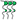

The functionality behind this icon changes dependent on the file type of the seismic data selected, whether they be Cbvs files or SEG-Y Direct (linked) files.
Cbvs Files can be browsed/edited (edit the cube locations, positions, trace samples, etc) by pressing the icon.
In the window that pops up (see below), sample values can be changed by editing any cell (similarly to an MS Excel sheet). Editing is disabled if the cube is write protected.

Several options are available:
Brings you directly to a new position (inline/crossline).
Check selected trace information like: x/y coordinates, inline/crossline, vertical z ranges, number of samples.
Switch to browse through Crosslines (and back to Inlines)
Step a preset number of inline/crossline positions to the left.
Step a preset number of inline/crossline positions to the right.

View the currently highlighted trace(s).
SEG_Y Direct Files are linked files and in their case, pressing the icon pops up the SEG-Y Direct File Editor window:
If the link to the SEG_Y file is broken, or the file is renamed, the New File Name is highlighted in red:

The user can then use the 'Select' options to edit the name and/or location to make good the link.